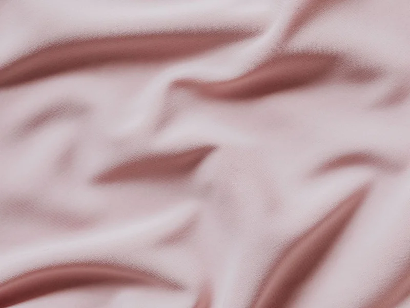
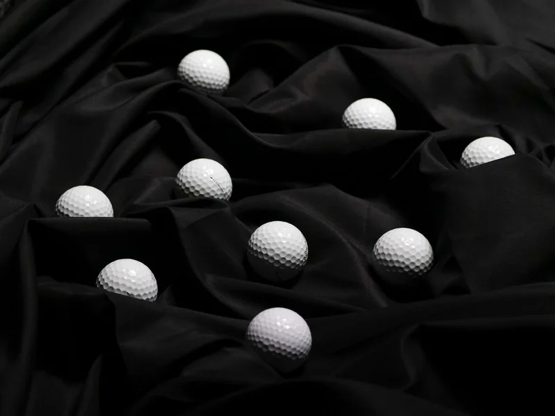
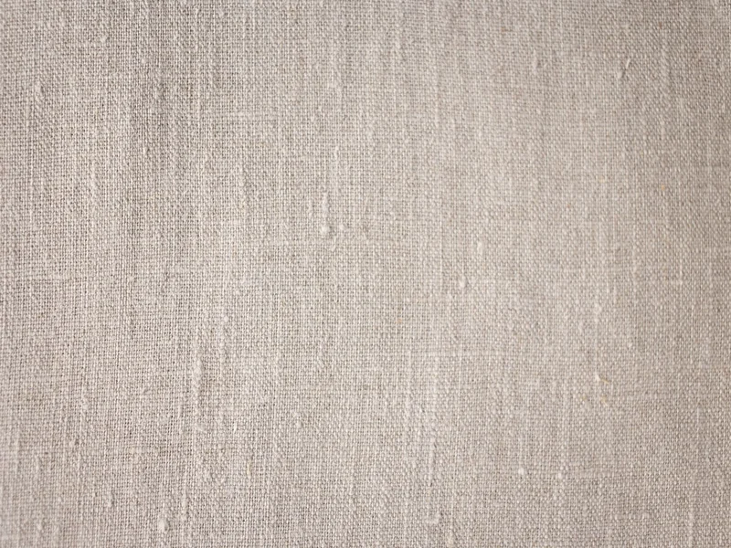

Premium Cottons
Our cottons are sourced from the finest ethical farms around the world. We offer a wide variety of weights and weaves, including crisp poplin, soft jersey, sturdy twill, and luxurious Egyptian cotton. Perfect for both casual wear and formal shirting, our cottons provide a superior canvas for your designs.
- 100% Organic & BCI Certified Options Available
- Highly Breathable & Exceptionally Durable
- Custom Dyeing, Printing, and Washes

Luxurious Silks
Elevate your collections with our premium pure silks. Known for their incredible drape, natural sheen, and hypoallergenic properties, our silk fabrics are ideal for formal wear, blouses, and high-end evening collections. We handle silk with the utmost care in our specialized units.
- Charmeuse, Crepe de Chine, Georgette, and Satin
- Vibrant, Colorfast Dyes with Rich Saturation
- Ahimsa (Cruelty-Free/Peace) Silk Sourcing Available

Breathable Linens
Our European-sourced linens offer the ultimate in breathability and relaxed elegance. Sustainable by nature, the flax plant uses significantly less water to grow and the resulting fabric is completely biodegradable. Essential for summer collections, resort wear, and relaxed tailoring.
- Pure Linen & Innovative Linen Blends
- Pre-washed Options for Immediate Softness
- Naturally Antimicrobial and Moisture-Wicking

Premium Denim
We source heavy-duty and stretch denim varieties built for durability and style. Our manufacturing facilities are equipped with specialized washing, distressing, and finishing capabilities to achieve the exact look and feel your brand requires, from raw selvedge to vintage stonewashes.
- 100% Cotton, Stretch, and Sustainable Denim
- Eco-Friendly Ozone & Laser Washing Techniques
- Custom Hardware & Detailing Capabilities

Viscose & Rayon
Offering a silk-like feel with incredible drape, our viscose and rayon fabrics are perfect for flowy dresses, blouses, and comfortable everyday wear. We prioritize sourcing from responsibly managed forests to ensure our cellulosic fibers are sustainable from seed to garment.
- ECOVERO™ and TENCEL™ Lyocell Options
- Soft Hand-feel with Excellent Color Retention
- Crepe, Georgette, and Twill Weaves

Wool & Tailoring Blends
For structured outerwear, suiting, and warm winter garments, our wool blends offer the perfect combination of warmth, structure, and refinement. From classic tweeds to fine worsted wools, we provide the right materials for premium tailored collections.
- Merino, Cashmere Blends, and Sturdy Tweeds
- Responsible Wool Standard (RWS) Certified Available
- Excellent Natural Temperature Regulation

TENCEL™ Lyocell & Modal
Certified by Lenzing™, our TENCEL™ Lyocell and Micro-Modal fabrics are manufactured from sustainably harvested beechwood and eucalyptus wood pulp via an environmentally responsible closed-loop process. Celebrated for their fluid drape, gentle hand-feel, and luxurious natural sheen, these botanical fibers offer exceptional color saturation and long-lasting softness.
- 100% Biodegradable & USDA Certified Biobased Fiber
- Superior Breathability & Natural Thermal Regulation
- Smooth, Friction-Free Surface Ideal for Sensitive Skin

Technical & Recycled Synthetics
Engineered for high-intensity athletic wear, technical activewear, and performance outerwear. Sourced with Global Recycled Standard (GRS) certified post-consumer recycled polyester and nylon blended with high-grade elastane. Features advanced moisture-management micro-capillaries, 4-way compression recovery, and anti-snag resistance.
- GRS-Certified 100% Post-Consumer rPET & Recycled Polyamide
- 4-Way Stretch Compression with Shape Memory Recovery
- UPF 50+ Sun Protection & Antibacterial Microbe Shield

Organic Hemp & Bamboo Blends
Bridging historical textile durability with contemporary regenerative luxury. Hemp is three times stronger than cotton, softens with every wash, and requires zero chemical pesticides or intensive irrigation. Blended with naturally hypoallergenic bamboo fibers, this slub-textured fabric delivers rustic sophistication for resortwear, tailored chinos, and conscious capsule lines.
- High Tensile Abrasion Resistance & Natural Antimicrobial Core
- Low Ecological Footprint with Zero Harmful Chemical Inputs
- Distinctive Slub Weave Texture with Luxurious Soft Hand